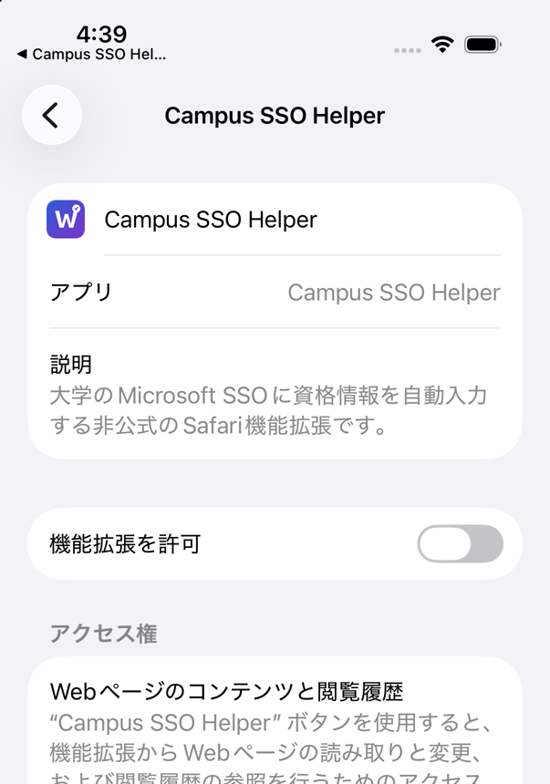
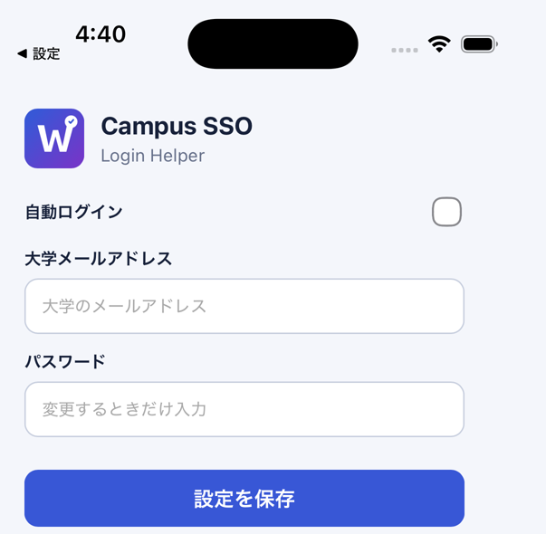

機能拡張をオンにする
上のボタンから設定を開き，「機能拡張を許可」をオンにします。

初回設定ガイド
3ステップでSafariの自動ログインを準備できます。
iOS 26.2以降では，Campus SSO Helperの設定画面を直接開きます。
SETUP
上のボタンから設定を開き，「機能拡張を許可」をオンにします。

同じ画面の「アクセス権」で，大学の学習支援サイトとMicrosoftのログイン画面へのアクセスを「許可」にします。
Safariのアドレスバーにある機能拡張メニューからCampus SSO Helperを開き，大学メールアドレスとパスワードを保存します。

「設定」→「アプリ」→「Safari」→「機能拡張」→「Campus SSO Helper」の順に開いてください。
アプリ設定を開くメールアドレスとパスワードはSafari機能拡張のローカル領域に保存し，Microsoftのログイン画面への自動入力だけに使用します。開発者のサーバーへは送信しません。
本アプリは対象教育機関およびMicrosoftの公式アプリではありません。